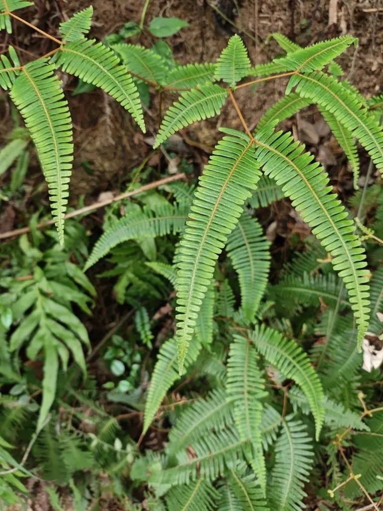

蕨类与裸子植物 · 植物界
芒萁 Dicranopteris dichotoma

芒萁是南方酸性红壤上常见的蕨类，羽状叶片成片生长，是水土保持的先锋植物，枯枝落叶还可作柴薪。
- 分类
- 门蕨类植物门纲水龙骨纲目水龙骨目科里白科属芒萁属
- 栖息环境
- 酸性红壤荒坡、松林下与火烧迹地，喜强光、耐干旱瘠薄
- 地理分布
- 中国华南、西南及华东南部，东南亚也有分布
- 保护级别
- 暂无评估；酸性土壤指示植物
物种志
芒萁是里白科的多年生蕨类，株高 30–80 cm。根状茎细长横走，密生鳞片。叶为二回羽状复叶，叶轴二歧分枝，末回羽片披针形，边缘有锯齿，叶面绿色，叶背灰绿色。芒萁的叶轴能在分叉处休眠，遇到适宜条件继续生长，形成一片片密集的叶丛。孢子囊群圆形，着生于叶背小脉上。
芒萁喜强光和酸性土壤，是南方红壤荒坡、马尾松林下与火烧迹地的先锋植物，根状茎蔓延迅速，能快速覆盖裸露地面，起到保持水土的作用。它耐干旱、耐瘠薄，但怕水涝。过去农村常割芒萁作柴薪，或铺在田里作绿肥与覆盖物；其根状茎可入药，有清热利尿、化瘀止血之效。芒萁在华南、西南的丘陵地区十分常见，是南方亚热带植被的典型成分。
形态与习性
- 株高30–80 cm
- 叶二回羽状复叶，叶轴二歧分枝
- 根状茎细长横走，蔓延极快
- 习性喜强光、耐干旱瘠薄
- 用途保持水土，可作柴薪与绿肥
- 指示南方酸性红壤的指示植物
趣味知识
- 芒萁成片长在南方红壤山坡上，是酸性土壤的“指示植物”。
- 它的根状茎蔓延极快，能在裸地和火烧迹地上迅速铺成一层绿。
- 过去农村常把芒萁割来当柴烧，或铺在田里作覆盖物。